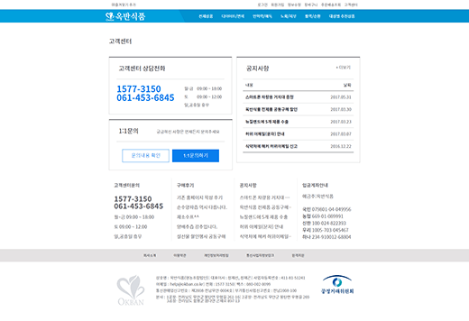
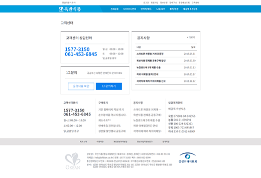
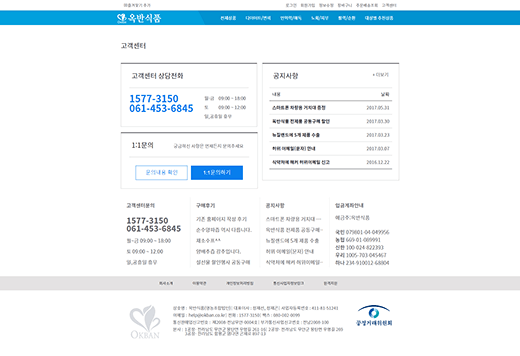

옥반식품 모바일페이지 및 pc페이지 리뉴얼 프로젝트를 진행하였다. 처음으로 작업한 적응형페이지이다. 모바일페이지를 먼저 만든 후 pc페이지를 리뉴얼을 진행하였다. 모바일페이지는 태블릿까지 지원하도록하였다.
풀 반응형으로 pc와 모바일을 같이쓰면 좋지만 여러문제로인하여 두가지로 나누게되었다. 이미지 슬라이더는 slick slider를 사용하였다 이때부터 더 확실하게 모듈화를시켜서 작업하기시작하였다. 그로인해 작업속도는 더욱 빨라지게되었다.

여러모로 의문이 많이있는 프로젝트였지만 적응형을 해볼수있었고 프론트엔드 프레임워크를 전혀 사용하지않고, 다양한 form tag들의 스타일을 지정하여야 하였기때문에 만족스러운 작업이었다.